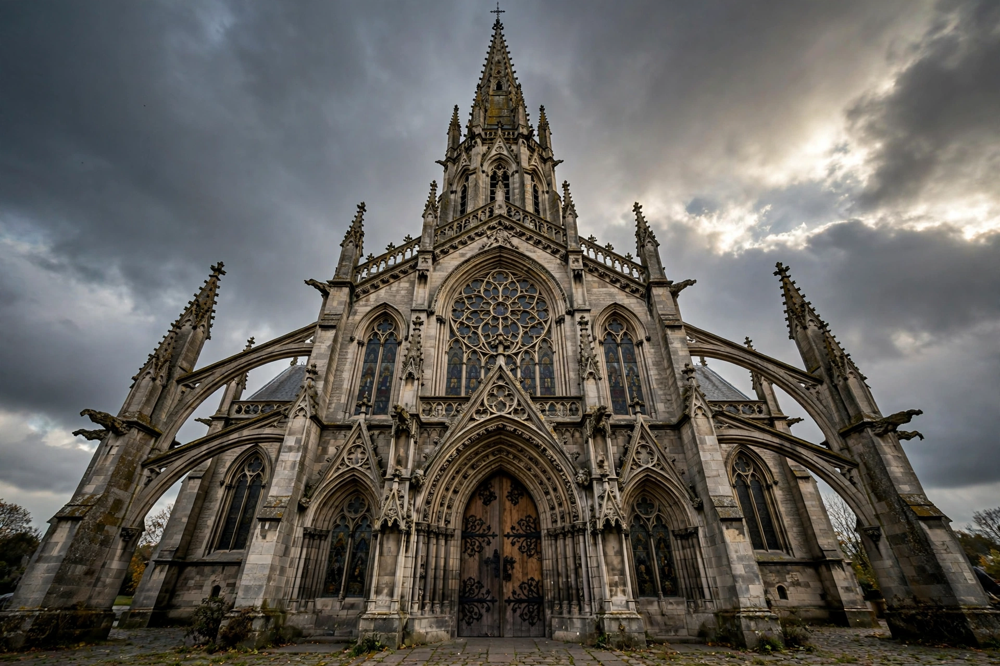

Gothic Revival (also called Neo-Gothic) is an architectural movement that drew on medieval Gothic forms — pointed arches, ribbed vaults, flying buttresses, pinnacles and stained glass — beginning in late 18th-century England and flourishing through the 19th century across Europe and North America.

Horace Walpole's Strawberry Hill (from 1749) popularised picturesque Gothic for houses. In the 1830s–40s A.W.N. Pugin argued Gothic was the morally true Christian style, and with Charles Barry designed the new Palace of Westminster. John Ruskin's writings championed Venetian Gothic.
The style was applied to churches, universities (Collegiate Gothic), railway stations such as St Pancras, town halls, and houses including American Carpenter Gothic. High Victorian Gothic used polychrome brick and muscular detailing. By the early 20th century modernism displaced it, though revivals continued for churches and campuses.